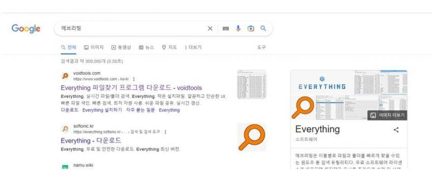
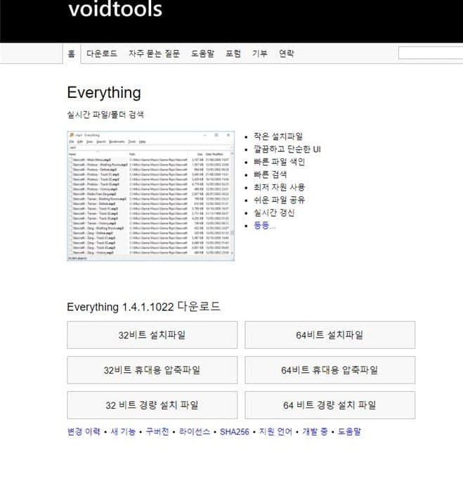
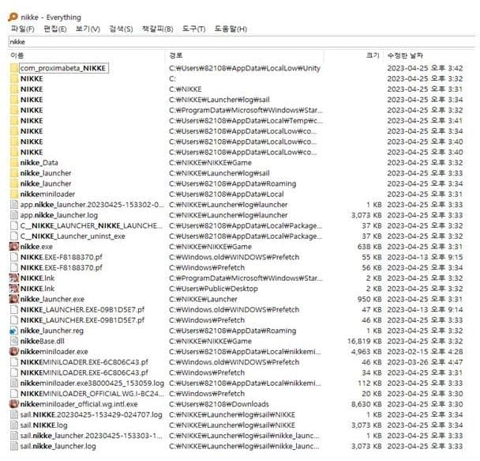
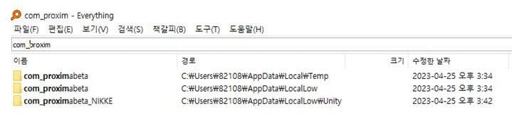
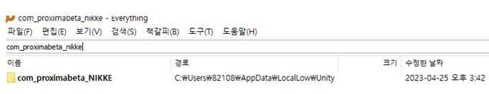

컴니케 재설치or오류발생 해결법을 적은 게이임
근데 댓글에 에브리띵 머시기가 있길래 함 해봤는데
내가 올린 글보다 더 빠르고 실속있게 니케를 재설치 할수가 있더라고 !!
그래서 글을 다시 수정하기엔 그렇고 해서 그냥 새로 적기로 했어
1 우선 검색탕에 에브리띵 이라고 검색한다 그러면 사진처럼

이렇게뜨게돼 그리고 에브리띵을 누르면

이렇게 설치를 어케할지 뜨게되는데
자신이 뭘 다운해야할지 모르겟다면 내피시를 좌클릭하고 속성을 누르면 자신이 몇비트인지 확인할수있어
그다음 설치를 하면
nikke
com.proximabeta
com_proximabeta
com_proximabeta_NIKKE
이 파일들을 하나씩검색하면 이렇게 뜨게되는데



그러면 이걸 다지우고 재설치를 하면돼!!
이방법이 더 좋은이유: 공지 글 처럼 하면 시간이 너무 오래걸림
그치만 이 방법을 사용시 시간이 단축되고 (엄청)
실속있게 가능하다 !!
니케는 대규모 업데이트를 하고 재설치를 해주면 용량이 더 작아진다고 해
방법알려준 게이들 고맙다 !!
공지는 안올려도 될듯 내가 공지글에 링크 남겨놓을게